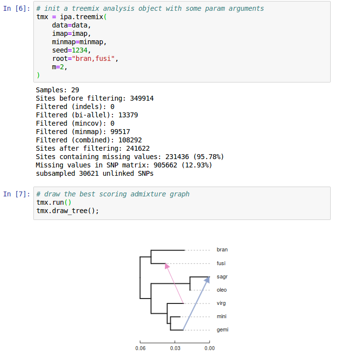
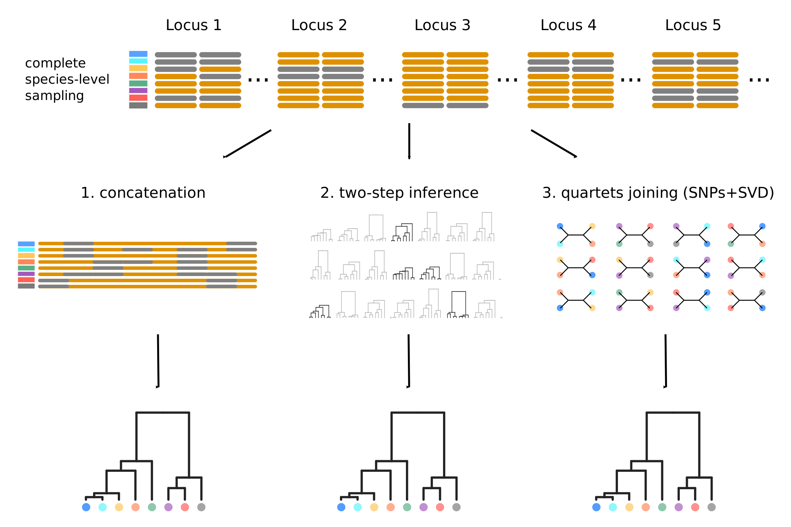
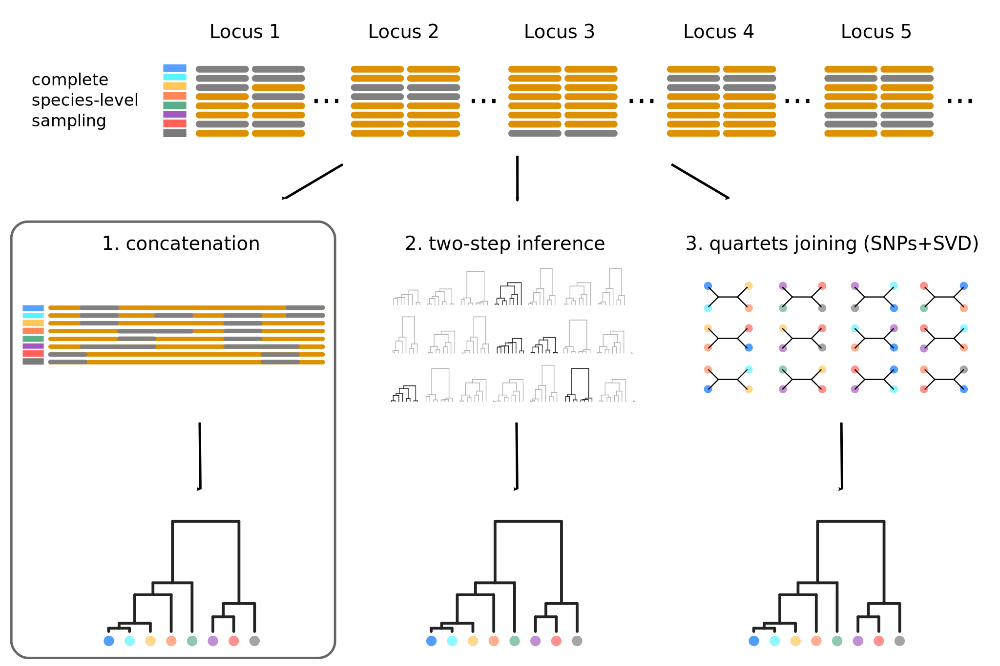
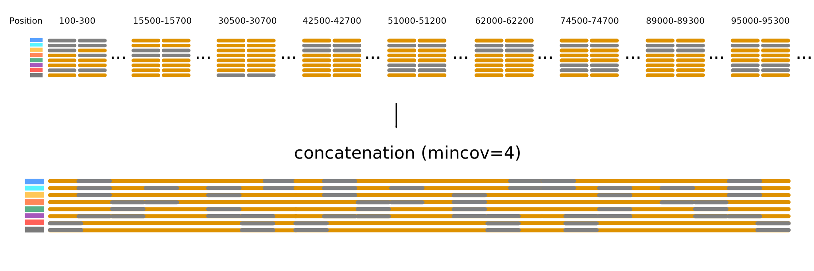
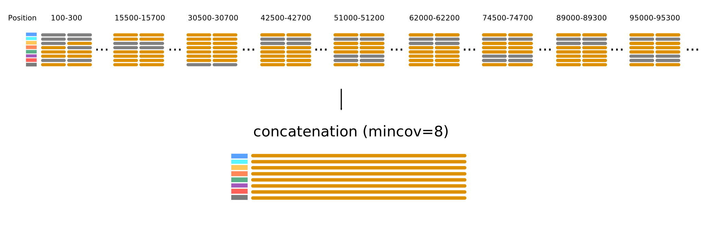
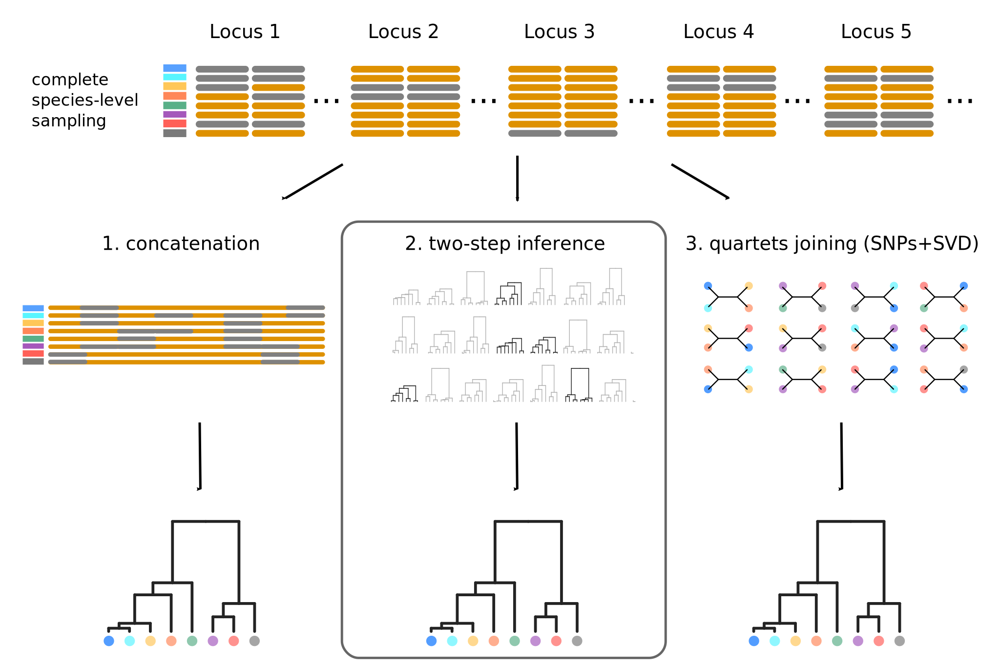
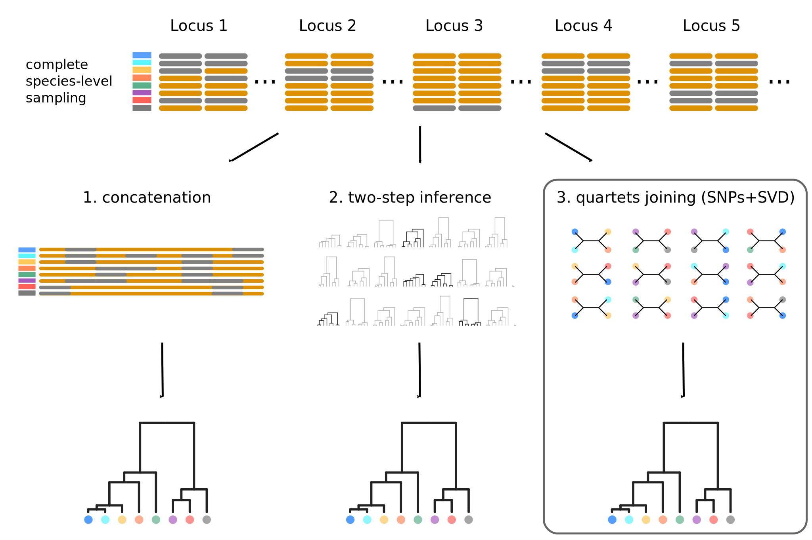
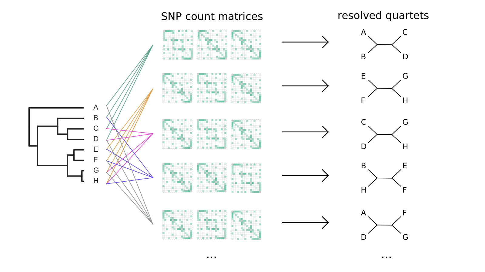

Sliding Windows, Species Trees and SNPs:
RAD applications in phylogenomics
RADCamp NYC2023
Deren Eaton, Columbia University
Phylogenomic sampling
Characterize evolutionary history from a subset of sampled genomes (individuals).

Phylogenomic sampling
Characterize whole genomes from a subset of sequenced markers.

Genealogical variation
It is important to examine evolutionary history across the entire genome.

Historical introgression/admixture
It is important to examine evolutionary history across the entire genome.

How can we most accurately reconstruct the
evolutionary history
of organisms from their genomes?
Can RAD-seq reconstruct genome-wide patterns?
Missing data (big problem for some analyses but not all).
Filtering and formatting data for downstream analyses.
Outline: RAD-seq phylogenomics in ipyrad
1. ipyrad-analysis toolkit
2. Gene tree extraction: concatenation.
3. Gene tree distributions: sliding window consensus.
4. Sticking with SNPs: genome-wide inference.
ipyrad-analysis toolkit (and toytree) and jupyter
ipyrad-analysis toolkit (and toytree)
Filter or impute missing data; easily distribute massively parallel jobs.
import ipyrad.analysis as ipa
# initiate an analysis tool with arguments
tool = ipa.pca(data=data, ...)
# run job (distribute in parallel)
tool.run()
# examine results
...
Quercus section Virentes
35 samples, 7 species plus outgroups.
ipyrad (ref): 58K loci, 51% missing, 484K SNPs. (30 min., 40 cores).

Hipp et al. (2014); Eaton et al. (2015); Cavender-Bares et al. (2015)
PCA: very sensitive to missing data

PCA: very sensitive to missing data
PCA: clear delimitation when (some) data are imputed

Phylogenomic inference methods

Missing data in RAD-seq and other methods
Missing data in RAD-seq and other methods
Window_extracter: extract, filter, format.
Reference mapped RAD loci can be "spatially binned" to form larger loci.
import ipyrad.analysis as ipa
# initiate an analysis tool with arguments
tool = ipa.window_extacter(
data=data,
scaffold_idx=0,
start=0,
end=1000000,
)
# writes a phylip file
tool.run()
Window_extracter: extract, filter, format.
Reference mapped RAD loci can be "spatially binned" to form larger loci.
Window_extracter: extract, filter, format.
Reference mapped RAD loci can be "spatially binned" to form larger loci.
Herbicide resistance among Amaranthus species.

Phylogenomic methods: gene trees
Gene tree inference
Faces two distinct problems:
(1) individual loci (e.g., RAD tags) are often insufficiently informative;
(2) most "loci" do not contain a single gene tree.
But is it a good idea to concat-alesce?
Data from different parts of the genome have different coalescent histories (different sampled ancestors due to recombination). Nearby (linked) regions share more ancestors
and thus are correlated, but this also decays over time.
How large are real loci that share the same gene tree?
We can investigate this question using simulations (e.g., msprime and ipcoal).
ipcoal: simulate genealogies and loci in spp. trees
At any reasonable phylogenetic scale the size of non-recombined loci is small!
import ipcoal
# simulate data with demographic parameters
model = ipcoal.Model(tree=newick, Ne=5e5, mut=1e-8, recomb=1e-9)
# simulate n loci of a given length
model.sim_loci(nloci=1, nsites=500)

Missing data in phylogenetics
Goal: A distribution of gene trees representing every species.
Missing data: Consensus sampling
Represent species by the consensus genotype across sampled individuals

treeslider: extract windows across chromosomes.
Runs raxml on windows and parses results into a "tree_table"
# define population groups
imap = {
"sp1": ["a0", "a1", "a2", "a3"],
"sp2": ["b0", "b1", "b2", "b3"],
"sp3": ["c0", "c1", "c2", "c3"],
"sp4": ["d0", "d1", "d2", "d3"],
}
# initiate an analysis tool with arguments
tool = ipa.treeslider(
data=data,
window_size=1e6,
slide_size=1e6,
imap=imap,
)
# distributes raxml jobs across all 1M windows in data set
tool.run()
Consensus sampling yields 3X as many fully sampled loci.
One sample of each species: 12K/57K loci
Consensus for each species: 32K/57K loci
Hipp et al. (2014); Eaton et al. (2015); Cavender-Bares et al. (2015)
Sliding windows
How well do concatenated RAD windows represent gene tree variation?
RAxML gene trees.
Sliding windows
How well do concatenated RAD windows represent gene tree variation?
Astral species trees inferred from gene trees.
Missing data in phylogenetics
Phylogenomic methods: SNPs

SVDquartets reduces SNP matrices to categorical results

SVDquartets reduces SNP matrices to categorical results

SVDquartets reduces SNP matrices to categorical results

Shortcoming of the SVDquartets approach
By reducing the quantative SNP frequency data to a categorical relevant information for inferring admixture is lost (e.g., ABBA-BABA; Durand et al. 2011).

Moving beyond ABBA-BABA
Higher level invariants (e.g., 5-taxon patterns) also exist and can provide even more information about admixture (Eaton et al. 2012, 2015). A difficult part of applying 4 or 5-taxon tests to larger tree, however, is that summarizing the results of many non-independent tests has not been automated and becomes difficult.